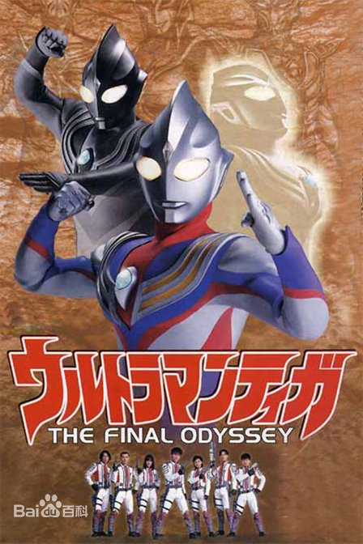

迪迦 奥特曼
迪迦奥特曼，日本圆谷特摄剧《迪迦奥特曼》及其衍生作品中的主角，也是首位拥有形态转化能力的奥特曼。不同于其他奥特曼 的是，迪迦奥特曼是在地球的超古代时期就已经出现的巨人，但并非是地球出生的奥特曼。他原本是黑暗巨人，也是其中的领袖，后在超古代时期的地球警备队队长幽怜的劝说下弃暗投明，吸收了三个同伴的力量再封印了他们，最终成为光之巨人迪迦奥特曼。 三千万年后，迪迦奥特曼的躯体被圆大古再度复苏，在相继打败了邪神加坦杰厄和迪莫杰厄后正式功成身退，人间体圆大古与七濑丽娜结婚及育有一女圆光，后育有一子圆翼 [1] 。 在平行世界中，迪迦和其他七位奥特战士击败了邪心王·黑暗影法师，并曾活跃在多个奥特曼的世界观中。
|  |